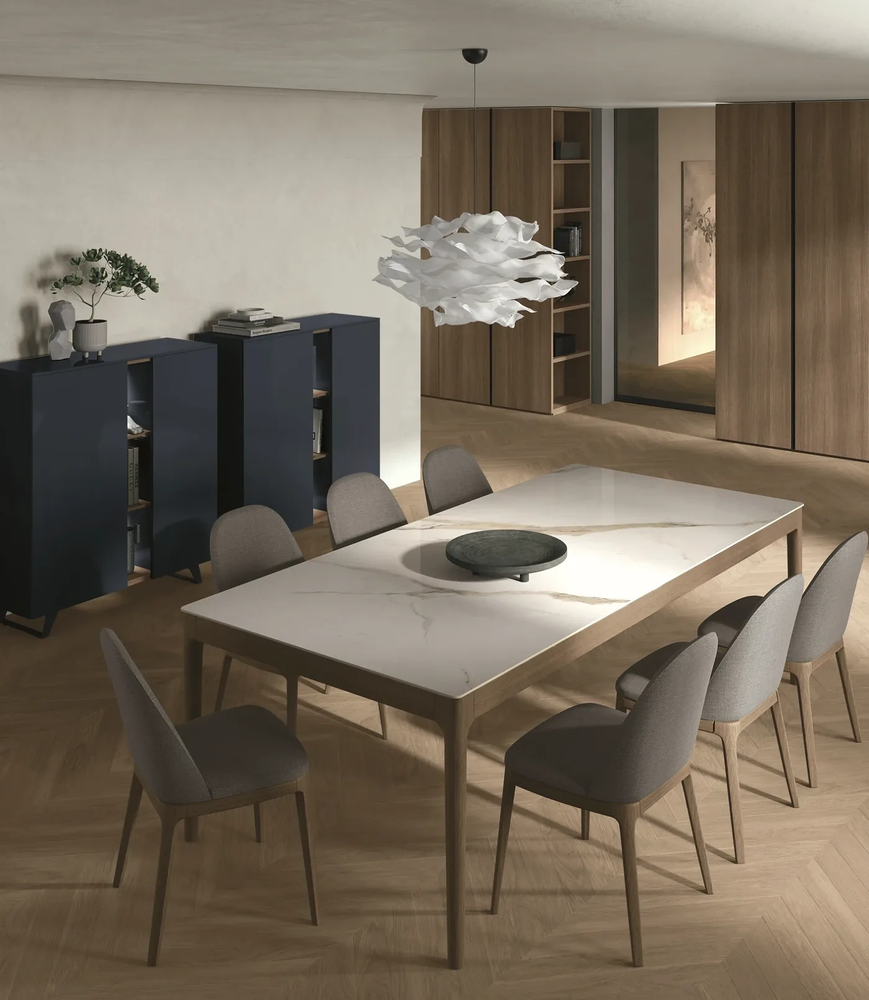

Tendances
Beige, pierre veinée et bois.
Chaque saison apporte ses teintes. Nous en gardons ce qui tient.
- Les grandes surfaces dans des tons qui ne se datent pas
- La tendance sur ce qui se remplace vite
- Les échantillons au magasin
Ce qui revient cette saison
Trois familles, et ce qu’on en fait.
-

Les beiges
Sable, lin, écru, grège
Ici une laque mate Arena. Sans risque sur les grandes surfaces : le beige ne se démode pas, il change de nuance.
-

Les pierres veinées
Travertin, piasentina
Le travertin côté clair, la piasentina — la pierre ci-contre — côté sombre. Pour un plateau ou une table basse ; sur toute une pièce, on s’en lasse.
-

Les bois chaleureux
Noyer ambré, chêne cognac, cannelures
Le moins risqué : le bois n’est pas revenu à la mode, il n’en est jamais sorti.


Pièce par pièce
Où mettre la tendance, et où ne pas la mettre.
-

Le salon
Le canapé neutre, le reste qui bouge
La base, pour longtemps. Le canapé dans un ton neutre, un tissu qui se nettoie : il ne doit rien à la saison. La tendance, en petit. Un fauteuil dans un ton chaud, un tapis, une table basse en pierre.
Voir les salons -

La salle à manger
La table franche, les chaises à la mode
La base, pour longtemps. La table, en bois massif ou plaqué, dans une essence franche. La tendance, en petit. Les chaises et la lumière, qui datent une salle à manger.
Voir la salle à manger -

Le dressing et la chambre
Des façades sobres, un intérieur qui change
La base, pour longtemps. Les façades dans un ton sobre, assorti au sol et aux portes. On les garde vingt ans, et on ne les regarde pas : on regarde ce qu’il y a derrière. La tendance, en petit. L’intérieur, les poignées, l’éclairage des penderies : démontables.
Voir la chambre


À toucher
Le plus sûr reste de les poser côte à côte.
Un beige n’est pas un beige tant qu’il n’a pas vu votre sol et votre lumière. Venez avec une photo de la pièce : les échantillons sont ici.
Mon projet01Noyer ambré 
02Chêne cannelé 03Laque mate 
04Lin texturé 05Pierre veinée 
06Laiton


Venez composer votre palette.
Au magasin, à Leval-Trahegnies, du lundi au samedi. Sans rendez-vous.
- Lundi
- 13h30 – 18h30
- Mardi au samedi
- 10h30 – 18h30
- Dimanche
- Fermé
- Téléphone
- 064 46 07 72